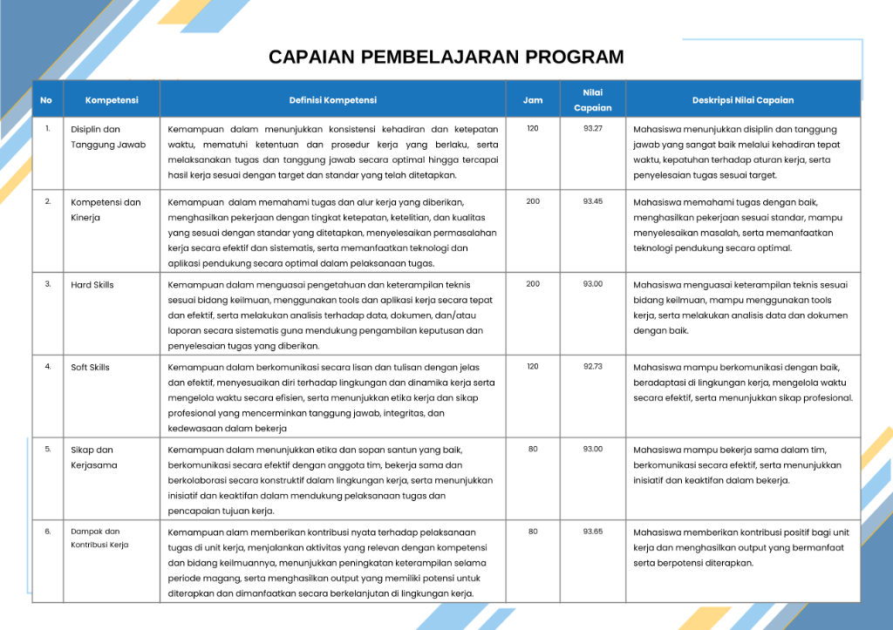
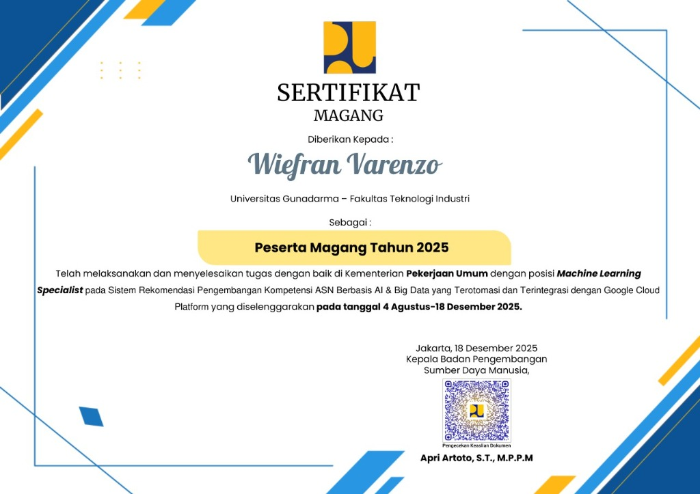
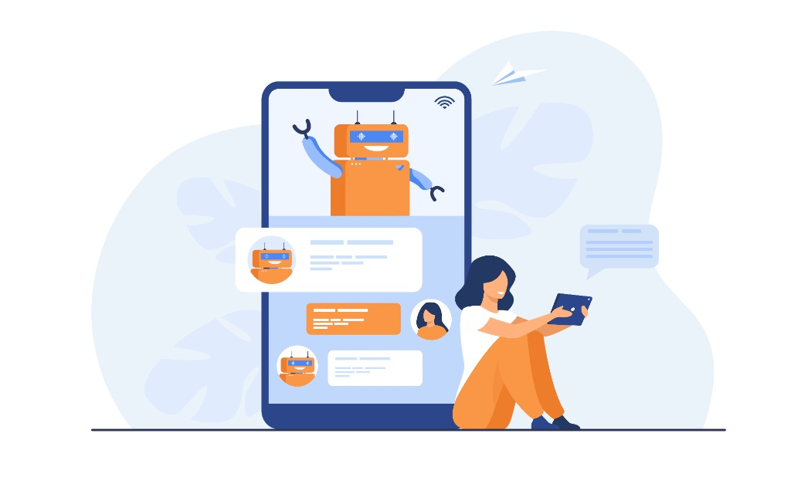
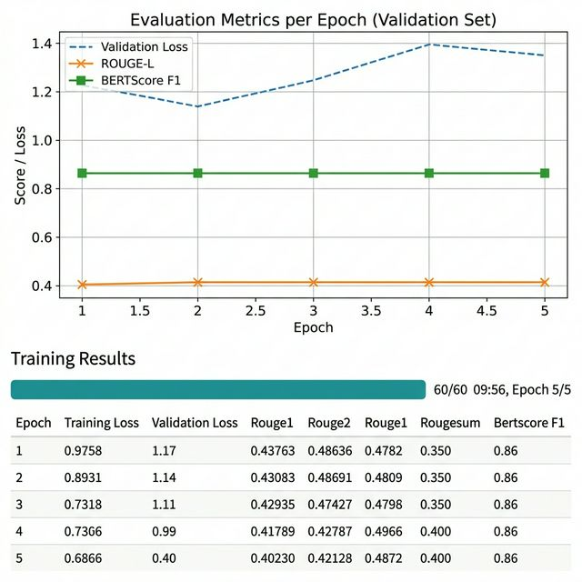
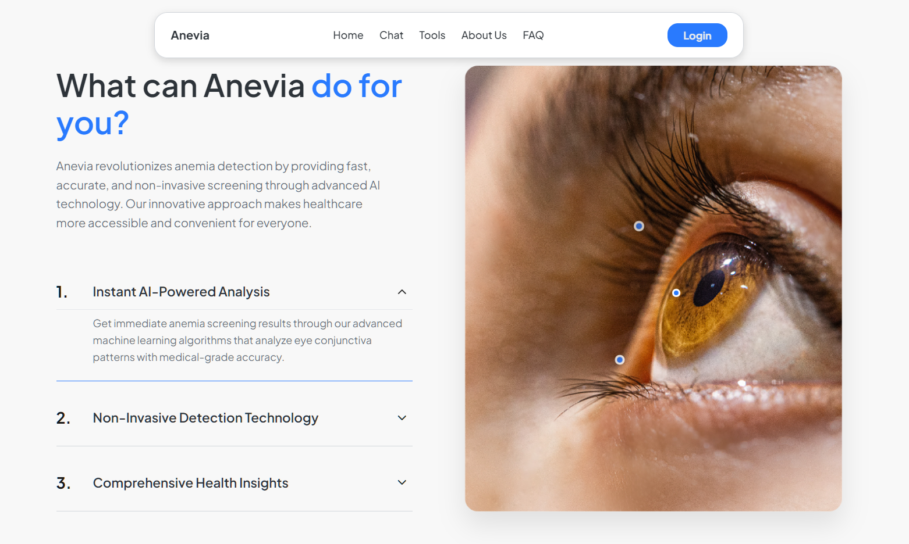
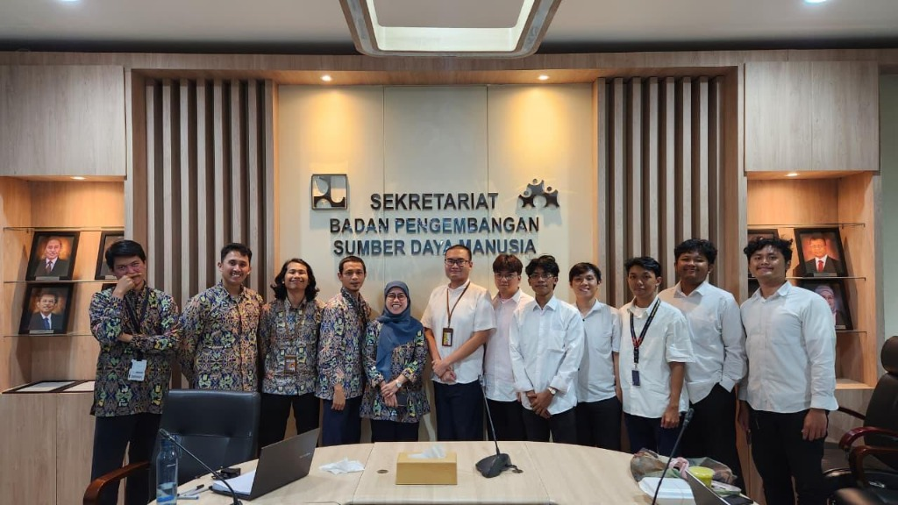
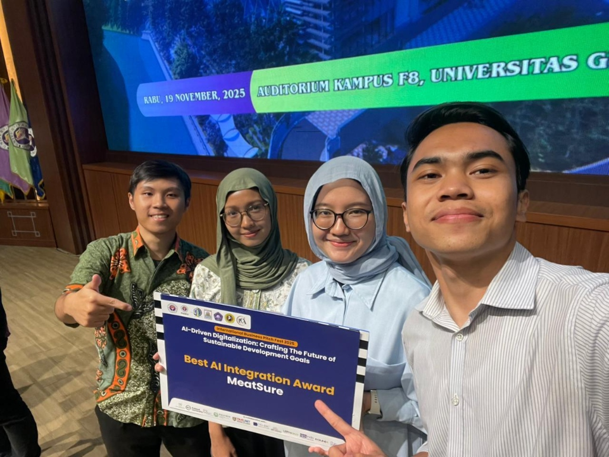
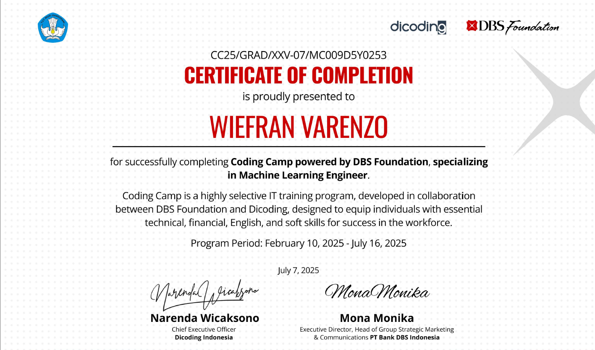

Hover to previewNextGen
An AI and big-data recommendation system for Indonesian civil-servant competency development, built during my internship at the Ministry of Public Works.
Role Machine Learning Specialist
Open to data & AI opportunities
Data Scientist and Machine Learning Engineer focused on practical AI, clear analysis, and products that people can actually use.
01 / Selected work
A focused selection—enough context to understand the problem, my role, and the result.


Hover to previewAn AI and big-data recommendation system for Indonesian civil-servant competency development, built during my internship at the Ministry of Public Works.
Role Machine Learning Specialist


Hover to previewA tax assistant combining a fine-tuned Mistral 7B model with RAG to answer from current regulation documents.

GitHub ↗An early anemia-detection web app using eye-image segmentation, designed to make screening more accessible.
02 / Profile
I’m a Computer Science student at Universitas Gunadarma with a 3.99 GPA. I enjoy the full path from messy data and experiments to a clear story and a working product.
My work spans machine learning, NLP, computer vision, recommendation systems, and data visualization. I’m especially comfortable turning analysis into something teams can understand and act on.
03 / Experience
Kementerian Pekerjaan Umum
Built NextGen, an automated AI and big-data competency recommendation system integrated with Google Cloud Platform.International Business Pitch Fest
Represented Indonesia with MeatSure among teams from Russia and Uzbekistan.Coding Camp by DBS
Completed a six-month intensive program with a final score of 97.0.Universitas Gunadarma
GPA 3.99 / 4.0004 / Capabilities
Python, PyTorch, TensorFlow, Scikit-learn, model evaluation
SQL, preprocessing, experimentation, Tableau, storytelling
LLMs, RAG, NLP, computer vision, recommendation systems
Clear communication, collaboration, and practical delivery
05 / Resume
WIEFRAN VARENZO — PROFILE
Computer Science student with a 3.99 GPA, hands-on AI product experience, and a track record across machine learning, data analysis, and technical presentation.
Request current PDF ↗06 / Credentials & media



07 / Contact